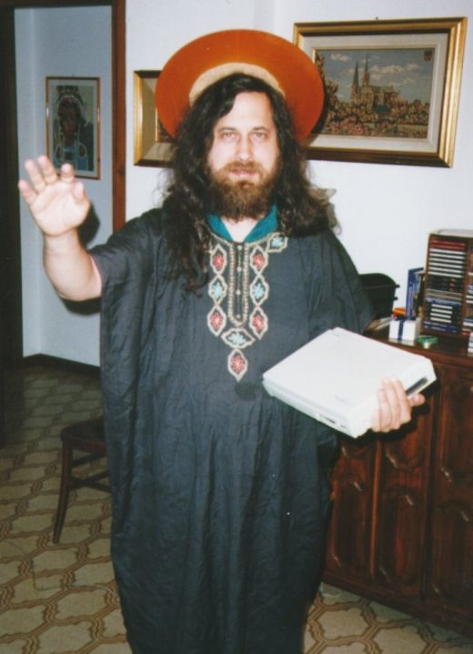

Il Maui High Performance Computing Center delle Hawaii si trova all’interno di un edificio a un piano situato nelle polverose colline rosse appena sopra la città di Kihei.
Circondato da panorami milionari e dal Silversword Golf Course che vale milioni di dollari, il centro è un posto da sogno per ogni ricercatore. Completamente diverso dai contorni sterili, squadrati di Tech Square o anche dagli agglomerati che ospitano i laboratori di ricerca e che si estendono disordinatamente, come Argonne, Illinois, e Los Alamos, New Mexico, il centro sembra quel tipo di posto dove i ricercatori trascorrono più tempo stesi al sole che a seguire i progetti del post-dottorato.
Un’ipotesi vera soltanto in parte. Nonostante essi tendano ad approfittare delle opportunità ricreative in loco, al contempo prendono seriamente il proprio lavoro. Secondo Top500.org, sito web che segue lo sviluppo dei supercomputer più potenti del mondo, l’IBM SP Power3 ospitato nel Computing Center è in grado di eseguire 837 miliardi di operazioni al secondo, affermandosi come uno dei 25 computer più potenti attivi sul pianeta. In comproprietà tra la University of Hawaii e la U.S. Air Force, la macchina divide i propri cicli operativi tra i compiti relativi alla logistica militare e le indagini fisiche sulle alte temperature.
In poche parole, l’High Performance Computing Center di Maui è un luogo unico, un posto dove l’intelligente cultura della scienza e dell’ingegneria si mescola pacificamente con l’atteggiamento rilassato delle isole hawaiiane. Come sintetizza felicemente uno slogan apparso nel 2000 sul sito web del laboratorio locale: “L’informatica in paradiso”.
Non è esattamente il luogo in cui ci si aspetterebbe di incontrare Richard Stallman, il quale di fronte allo stupendo panorama del vicino Maui Channel, dalla finestra di un ufficio dell’edificio, borbotta con fare critico: “Troppo sole”. Comunque sia, nei panni dell’emissario di un altro paradiso informatico, Stallman è venuto a portare il proprio messaggio, anche se ciò comporta l’esposizione della sua carnagione pallida da hacker ai pericoli del sole tropicale.
La sala della conferenza è già metà piena quando arrivo per seguire il suo intervento. Il rapporto tra uomini e donne è leggermente migliore dell’evento di New York, ma neppure troppo: 85% contro 15%. Quasi metà dei presenti indossa pantaloni color kaki e magliette da golf griffate. L’altra metà sembra seguire l’usanza locale: le magliette a fiori così diffuse in questa parte del mondo e i volti abbronzati color ocra. Un pubblico multiforme accomunato comunque dai vari gadget elettronici: telefoni cellulari Nokia, Palm Pilot, portatili Sony VAIO.
Inutile aggiungere come Stallman sembri del tutto fuori luogo, in piedi in fondo alla sala con indosso una maglietta blu, dei pantaloni larghi marroni e calzini bianchi. Le luci al neon della sala ne evidenziano il colore poco salutare della pelle assetata di sole. Barba e capelli sono abbastanza lunghi da far apparire gocce di sudore perfino sul più fresco dei colli hawaiiani. Gli manca solo un tatuaggio sulla fronte con una parola tipo “continentale”, e Stallman potrebbe essere scambiato per un marziano.
Mentre Stallman gironzola intorno, alcune persone in platea con la maglietta del Maui FreeBSD Users Group (MFUG) sono indaffarate a sistemare le apparecchiature audio e video. FreeBSD, un software libero frutto della Berkeley Software Distribution, la venerabile versione accademica di Unix sviluppata negli anni ’70, tecnicamente si pone come rivale del sistema operativo GNU/Linux. Eppure nel mondo degli hacker gli interventi di Stallman vengono documentati con un fervore analogo a quello riservato ai Grateful Dead e alla leggendaria truppa di archivisti amatoriali. Stavolta spetta agli aderenti del Maui Free-BSD Users Group assicurarsi che i colleghi di Amburgo, Mombai e Novosibirsk non perdano le ultime perle di saggezza elargite da RMS.
L’analogia con i Grateful Dead è assolutamente pertinente. Nel descrivere le opportunità commerciali inerenti al modello del software libero, non di rado Stallman si è riferito a quell’esempio. Rifiutando di limitare le registrazioni amatoriali dei concerti dal vivo, i Grateful Dead sono diventati molto più di un gruppo rock. Sono divenuti il centro di una comunità tribale dedicata alla loro musica. Con il passare del tempo tale comunità ha assunto proporzioni talmente ampie, confermando al contempo la propria devozione, che il gruppo ha rinunciato ai contratti con le case discografiche per affidarsi unicamente alle entrate dei concerti e dei tour dal vivo. Nel 1994, ultimo anno delle apparizioni sul palco, i Grateful Dead avevano incassato 52 milioni di dollari soltanto con i biglietti venduti ai concerti.1
Pur essendo ben poche le aziende di software capaci di imitare simili successi, l’aspetto tribale della comunità del software libero rappresenta un motivo per cui nella seconda metà degli anni ’90 molta gente ha iniziato a considerare positiva l’idea di pubblicare i codici sorgenti. Nella speranza di attivare una propria schiera di fedeli appassionati, società come IBM, Sun Microsystems e Hewlett-Packard sembrano aver adottato la lettera, se non esattamente lo spirito, del messaggio di Stallman. Nel definire la GPL come la “Magna Carta” dell’industria tecnologica, il giornalista specializzato di ZDNet, Evan Leibovitch, considera la crescente affezione per tutto ciò che è targato GNU qualcosa di più di una semplice tendenza. “Si tratta di un mutamento sociale che consente agli utenti di riprendere in mano il controllo sul proprio futuro”, scrive Leibovitch. “Come la Magna Carta riconosceva i diritti dei cittadini britannici, così la GPL sostiene i diritti e le libertà dei consumatori nell’interesse degli stessi utenti del software.”2
L’aspetto tribale della comunità del software libero consente inoltre di spiegare perché mai una quarantina di programmatori, che altrimenti se ne starebbero a lavorare su progetti di fisica oppure a navigare sul web per sapere quando arriverà il vento buono per il surf, si trovino invece pigiati in una sala-conferenze ad ascoltare Stallman.
Contrariamente a quanto accaduto a New York, stavolta non c’è nessuno a presentarlo e neppure lui si presenta. Non appena il gruppo del FreeBSD ha finito di approntare le apparecchiature, Stallman si limita a farsi avanti e inizia a parlare, con la voce che copre ogni altro brusio in sala.
“Quando si affronta la questione delle regole concernenti l’utilizzo del software, per lo più sono le stesse aziende a occuparsene, e quindi vedono la cosa dal punto di vista della propria utilità”, così Stallman apre l’intervento. “Questa la domanda che sembrano porsi: quali norme possiamo imporre agli altri in modo che debbano pagarci un sacco di soldi? Negli anni ’70 ho avuto la buona sorte di far parte di una comunità di programmatori fondata sulla condivisone del software. E grazie a ciò mi è sempre piaciuto considerare la medesima questione da un punto di vista diverso, chiedendomi: quali sono le regole necessarie per rendere la società più giusta e positiva per quanti ne fanno parte? E quindi sono arrivato a conclusioni del tutto opposte.”
Ancora una volta Stallman propone rapidamente la parabola della stampante laser Xerox, concedendosi un attimo di pausa prima di ripetere il gesto drammatico di puntare il dito contro qualcuno del pubblico. Passa poi a dedicare un minuto o due alla spiegazione del nome GNU/Linux.
“Qualcuno potrebbe dire, ‘Perché mai affaticarsi tanto per guadagnare consensi per questo sistema? In fondo l’importante è che si sia raggiunto lo scopo prefissato, non tanto chi ne abbia il merito.’ Be’, se questo fosse vero si tratterebbe di un saggio consiglio. In realtà, il progetto non riguarda la realizzazione di un sistema operativo, quanto piuttosto la diffusione dell’idea stessa di libertà per gli utenti informatici. E per riuscirci dobbiamo permettere qualsiasi utilizzo del computer in piena libertà.”3
E aggiunge: “C’è ancora molto lavoro da fare”.
Per qualcuno tra il pubblico si tratta di materiale datato, per altri suona un po’ arcano. Quando una persona del contingente in maglietta da golf sembra appisolarsi, Stallman si ferma e chiede al vicino di svegliarlo.
“Una volta qualcuno ha trovato la mia voce così suadente che mi ha chiesto se per caso non fossi un guaritore”, dice Stallman, suscitando le risate del pubblico. “Temo che questo significhi che posso aiutarvi a sprofondare gentilmente in un rilassante pisolino. E forse qualcuno ne ha davvero bisogno. E quindi non solleverò obiezioni. Se qualcuno vuole dormire, non faccia complimenti.”
Il discorso si chiude con una breve analisi dei brevetti sul software, questione che suscita sempre maggiore preoccupazione sia nella comunità del software libero sia in ambito industriale. Come nel caso di Napster, tali brevetti riflettono l’ambigua situazione di dover applicare leggi e concetti del mondo fisico all’universo incorporeo delle tecnologie dell’informazione. La differenza tra la tutela di un programma sotto copyright e quella di uno coperto da brevetto è sottile ma significativa. Nel primo caso, chi ha creato il software può vietare la duplicazione del codice ma non quella dell’idea o della funzionalità cui si riferisce quel codice. In altri termini, se uno sviluppatore sceglie di non usare un programma tutelato dai termini imposti dall’autore originale, gli resta comunque la libertà di operare il cosiddetto “reverse-engineering” – ovvero, riprodurne le funzionalità scrivendo nuovamente il codice partendo da zero. Si tratta di una duplicazione delle idee assai comune nell’industria del software commerciale, dove spesso le aziende isolano i gruppi a cui affidano tali operazioni, per evitare l’accusa di spionaggio aziendale o possibili scambi tra gli sviluppatori. Nel gergo dell’odierno sviluppo informatico, ci si riferisce a questa tecnica col termine di ingegneria in “locali senza polvere.”
I brevetti sul software operano in maniera diversa. Secondo l’omonimo ufficio statunitense, aziende e individui possono brevettare ogni nuovo algoritmo purché lo sottopongano a una revisione pubblica. In teoria, ciò consente al possessore di quel brevetto di trattare la diffusione dell’invenzione con un monopolio limitato a 20 anni dalla data di presentazione della richiesta. In pratica, tale diffusione riveste un valore minimo, poiché spesso l’operatività del programma si spiega da sé. Contrariamente al copyright, un brevetto offre a chi lo detiene la possibilità di impedire lo sviluppo indipendente di un programma dotato di funzionalità identiche o analoghe.
Nell’industria del software, dove 20 anni posso arrivare a coprire l’intero arco di vita di un mercato, i brevetti assumono connotati strategici. Laddove aziende quali la Microsoft e la Apple una volta si facevano guerra sul copyright e sull’aspetto tipico di varie tecnologie, le società odierne su Internet ricorrono ai brevetti, poiché sono uno strumento atto a bloccare applicazioni individuali e modelli commerciali, come rivela il noto caso di Amazon.com, che nel 2000 tentò di brevettare il procedimento per effettuare acquisti rapidi online denominato “one-click”. Ma per la maggior parte delle società i brevetti sul software sono divenuti uno strumento difensivo, dove gli scambi di licenze servono a pareggiare la quantità di brevetti posseduti da una corporation contro quelli di un’altra. Tuttavia in alcuni importanti casi riguardanti la crittografia e gli algoritmi per immagini grafiche, alcuni produttori di software sono riusciti a bloccare determinate tecnologie concorrenti.
Per Stallman, la questione dei brevetti sul software serve a mettere in evidenza la necessità di un’eterna vigilanza da parte degli hacker. Sottolinea inoltre l’importanza di insistere sui benefici politici dei programmi di software libero rispetto ai vantaggi competitivi. Riferendosi alla capacità dei brevetti di creare zone protette all’interno del mercato, Stallman ritiene che la competizione nelle prestazioni e nei prezzi, due aree in cui i sistemi operativi di software libero quali GNU/Linux e FreeBSD già vantano un discreto vantaggio sulle controparti proprietarie, sia un problema di importanza secondaria rispetto alle questioni più ampie concernenti la libertà degli sviluppatori e degli utenti.
“Non ci manca certo il talento necessario a produrre software migliore”, sostiene Stallman. “Ma non abbiamo il diritto di intervenire. Qualcuno ci ha vietato di offrire servizi al pubblico. E allora, che cosa succede quando gli utenti s’imbattono in vuoti di questo tipo nel software libero? Se sono stati convinti dal movimento open source che queste libertà sono positive poiché danno come risultato un software più potente e affidabile, probabilmente diranno, ‘Non avete mantenuto la promessa. Questo programma non è affatto più potente, gli manca una certa funzione. Mi avete mentito’. Se invece concordano con il movimento del software libero sul fatto che la libertà è importante per se stessa, allora diranno, ‘Come si permette questa gente di impedirmi di usufruire di questa funzione, e con essa della libertà?’. Grazie a questo tipo di risposta forse riusciremo a sopravvivere alle bordate che ci attendono non appena esploderà la questione dei brevetti.”
Questi commenti hanno effetti piuttosto articolati. Quando si parla di brevetti la maggior parte degli esponenti open source si mostra altrettanto, se non più decisa di Stallman. Eppure la logica sottostante la sua tesi – l’accento che i sostenitori dell’open source pongono sui vantaggi utilitaristici del software libero rispetto a quelli politici – rimane immune da contestazioni. Piuttosto che sottolineare la rilevanza politica di tali programmi, gli esponenti open source hanno scelto di evidenziare l’integrità ingegneristica del modello di sviluppo messo a punto dagli hacker. Citando la forza delle revisioni collaborative, la tesi dell’open source sostiene che programmi come GNU/Linux oppure FreeBSD siano costruiti e verificati in maniera più accurata e di conseguenza risultino più affidabili per l’utente medio.
Ciò non implica la mancanza di valenze politiche per il termine “open source”, il quale mira sostanzialmente a due obiettivi. Primo, elimina la confusione associata alla parola “free”, che in inglese ha il doppio significato di “libero” e “gratuito”, tant’è vero che molti imprenditori tendono a interpretarla nel senso di “costo zero”. Secondo, consente alle aziende di prendere in esame il fenomeno del software libero in un contesto tecnologico anziché etico. Eric Raymond, cofondatore della Open Source Initiative e uno dei primi hacker ad abbracciare quel termine, riassume efficacemente la frustrazione di dover seguire Stallman sul terreno politico in un saggio del 1999 intitolato “Shut Up and Show Them the Code” (Smetti di parlare e fagli vedere il codice):
La retorica di RMS è molto seducente per gente come noi. Noi hacker ci riteniamo pensatori e idealisti sempre aperti al richiamo dei “principi”, della “libertà”, dei “diritti”. Anche quando ci troviamo in disaccordo sui bit di qualche suo programma, siamo convinti che lo stile retorico di RMS debba funzionare comunque; rimaniamo sconcertati e increduli quando questo non si verifica con il 95% di quanti non sono “wired” come noi.4
Questo 95%, scrive Raymond, comprende la vasta maggioranza dei manager, degli investitori, degli utenti non-hacker cui spettano, non foss’altro per il peso dei numeri, le decisioni sull’andamento generale del mercato commerciale. Se non si trova il modo di convicerli, insiste Raymond, i programmatori sono condannati a perseguire la propria ideologia ai margini della società:
Quando RMS insiste sul fatto che dovremmo parlare dei “diritti degli utenti”, provoca un invito pericolosamente attraente a ripetere i fallimenti del passato. Dobbiamo respingerlo – non perché siano sbagliati i principi di base, ma perché quel tipo di linguaggio, applicato al software, semplicemente non riesce a convincere nessun altro tranne noi. Finisce anzi col confondere e allontana molta gente che non appartiene alla nostra cultura.5
Ascoltando Stallman in persona enunciare il proprio credo politico, sembra difficile notare qualcosa di poco chiaro o di fastidioso. Il suo aspetto può apparire poco attraente, ma il messaggio è del tutto logico. Quando una persona tra il pubblico chiede se, nel rifiutare il software proprietario, coloro che propongono il software libero finiscano per perdere la capacità di stare al passo con i più recenti sviluppi tecnologici, Stallman replica in modo coerente alle proprie opinioni. “Credo che la libertà sia più importante del puro avanzamento tecnico”, dice. “Sceglierei sempre un programma libero meno aggiornato piuttosto che uno non-libero più recente, perché non voglio rinunciare alla libertà personale. La mia regola è, se non posso condividerlo con gli altri, allora non lo prendo.”
Simili risposte, tuttavia, non fanno altro che rinforzare la natura quasi religiosa di quel messaggio. Come un ebreo con i cibi kosher o un mormone che rifiuta di bere alcolici, Stallman dipinge la propria decisione di usare il software libero in luogo di quello proprietario con i colori della tradizione e del credo personale. Come si usa fra gli evangelisti del software, Stallman evita però di forzare i presenti ad accettare le sue opinioni a ogni costo. In ogni caso, è raro il caso in cui, dopo averlo ascoltato, qualcuno se ne vada senza sapere quale sia la vera strada che conduce alla legittimità del software.
Per meglio enfatizzare il messaggio, Stallman inframmezza il discorso con un rituale insolito. A un certo punto tira fuori, da una busta di plastica, una tunica scura e la indossa. Da un’altra busta prende il disco rigido di un computer, giallo e riflettente, e se lo mette in testa. Dal pubblico iniziano a levarsi le prima risate.
“Io sono Sant’Ignucius della Chiesa dell’Emacs”, recita alzando la mano destra come a dispensare la benedizione. “Sono qui a benedire i vostri computer, figli miei.”
Dopo pochi secondi le risate si trasformano in uno scrosciante applauso. E mentre il pubblico continua ad applaudire, il disco rigido sulla testa assorbe i riflessi della luce sovrastante, creando il preciso effetto di un’aureola. In attimo eccolo trasformarsi da strano personaggio a icona religiosa russa.
“All’inizio l’Emacs non era altro che un elaboratore testi”, così Stallman sintetizza l’evoluzione del programma. “Alla fine divenne un modello di vita per molti e una religione per alcuni. Una religione che definiamo la Chiesa dell’Emacs.”
La sceneggiata rappresenta uno spensierato momento di autoironia, un’umoristica stoccata di rimando alle molte persone che considerano l’ascetismo del software propugnato da Stallman null’altro che un camuffamento del suo fanatismo religioso. Ma è anche un modo per mostrarsi senza difese, apertamente. È come se, con addosso quel travestimento di tunica e aureola, abbia finalmente deciso di concedere qualche libertà ai presenti, proponendo loro: “Potete ridere di me quanto volete. So bene di essere un tipo strano”.
Parlando in seguito del personaggio di Sant’Ignucius, Stallman spiega di averlo ideato nel 1996, parecchio tempo dopo la creazione dell’Emacs ma sicuramente prima dell’apparizione del termine “open source” e della susseguente lotta per la leadership nella comunità hacker. Al contempo, sottolinea, voleva trovare un modo per “prendersi in giro”, così da ricordare al pubblico che, per quanto testardo, non era poi quel fanatico dipinto da qualcuno. Fu soltanto dopo, aggiunge Stallman, che gli altri si appropriarono di quell’alter ego per danneggiare la sua reputazione personale di ideologo del software, come testimonia un’intervista di Eric Raymond apparsa nel 1999 sul sito web linux.com:

Figura 8.1 Stallman nei panni di Sant’Ignucius. Fotografia di Wouter van Oortmerssen.
Quando sostengo che RMS calibri con molta attenzione le proprie azioni, non intendo disprezzarlo né accusarlo di poca sincerità. Voglio dire che, al pari di ogni efficace comunicatore, possiede un buon guizzo teatrale. Talvolta ne è consapevole – l’avete visto nei panni di Sant’Ignucius, benedire il software con un disco in testa? Ma per lo più è qualcosa di inconsapevole; ha imparato a stimolare una certa irritazione che funziona, che tiene inchiodata l’attenzione della gente senza (generalmente) confonderla troppo.6
Stallman rifiuta l’analisi di Raymond. “È soltanto il mio modo di prendermi in giro”, risponde. “Il fatto che altri lo giudichino in maniera diversa è solo un riflesso delle loro posizioni, non delle mie.”
Ciò detto, Stallman non nega di sentirsi un attore mancato. “Scherzi?”, fa a un certo punto. “Amo trovarmi al centro dell’attenzione.” Per dare una spinta a questo processo, mi rivela che una volta si era iscritto a un’associazione la cui attività puntava a esaltare la capacità di parlare in pubblico, pratica che raccomanda caldamente a chiunque. Possiede un senso della propria presenza sul palco che farebbe invidia a molti attori teatrali e rimanda ai varietà vaudevilliani del passato. Qualche giorno dopo il discorso al Maui High Performance Computing Center, gli rammento il suo intervento al LinuxWorld 1999 per chiedergli se non sia per caso affetto dal complesso di Groucho Marx – ovvero, il rifiuto di appartenere a qualsiasi gruppo che lo vorrebbe invece tra i propri aderenti. La replica di Stallman è immediata: “No, ma ammiro parecchio Groucho Marx e sicuramente alcune sue uscite mi hanno influenzato parecchio. Ma ho trovato fonte d’ispirazione anche in Harpo Marx”.
L’influenza di Groucho Marx appare evidente nella sua costante ricerca della battuta giusta. E comunque, battute e giochi di parole sono un tratto comune agli hacker. Ma forse l’aspetto di Stallman più vicino a Groucho sta nel modo impassibile con cui lancia le sue frecciatine. In genere queste arrivano così furtive e improvvise – senza neppure un’alzata di sopracciglia o l’accenno di un sorriso – che viene da chiedersi se non sia Stallman a prendersi gioco del pubblico anziché viceversa.
Le risate suscitate dalla parodia di Sant’Ignucius al Maui High Performance Computer Center fanno svanire simili preoccupazioni. Pur senza imporsi come prim’attore, Stallman possiede sicuramente le doti per tenere felicemente testa agli ingegneri assiepati in quella sala. “Per diventare santi della Chiesa dell’Emacs non occorre coltivare il celibato, ma bisogna condurre un’esistenza basata sulla purezza morale”, spiega ai presenti. “Dovete esorcizzare il malefico sistema operativo proprietario dai vostri computer per poi installarne uno completamente libero. E su quello dovrete poi far girare soltanto software libero. Se sarete in grado di aderire a questi precetti, allora anche voi diventerete santi della Chiesa dell’Emacs, e potrete perfino guadagnarvi un’aureola.”
La scena di Sant’Ignucius si chiude con una rapida battuta per addetti ai lavori. Su gran parte dei sistemi Unix e annesse diramazioni, il maggior rivale dell’Emacs è vi, un elaboratore di testi sviluppato dall’ex-studente alla University of Berkeley (California) e attuale responsabile della ricerca presso la Sun Microsystems, Bill Joy. Prima di togliersi l’“aureola”, Stallman scherza sul programma rivale. “Talvolta qualcuno mi chiede se nella Chiesa dell’Emacs non sia considerato peccato ricorrere al vi”, dice. “Usarne una versione libera non è peccato, ma è una penitenza. Happy hacking a tutti.”
Dopo una breve sessione dedicata a domande e risposte, parte del pubblico gli si stringe intorno. Qualcuno gli chiede un autografo. “Firmo su questo foglio”, dice allungando a una donna la stampa della GNU General Public License, “ma soltanto se mi prometti di usare sempre il termine GNU/Linux invece di Linux e chiedi ai tuoi amici di fare altrettanto.”
Il commento non fa altro che confermare un’osservazione del tutto personale. Al contrario di altre figure teatrali e politiche, Stallman non riesce mai a “spegnersi”. A parte il personaggio di Sant’Ignucius, le posizioni filosofiche estrinsecate sul palco rimangono tali e quali anche dietro le quinte. Più tardi quella stessa sera, durante una chiacchierata a cena, un programmatore manifesta il suo apprezzamento per i programmi “open source”; Stallman alza subito il tono pur tra un boccone e l’altro: “Vuoi dire software libero, è questa la definizione giusta”.
Tornando per un attimo alla parte della conferenza riservata alle domande conclusive, Stallman ammette talvolta di giocare a fare il pedagogo. “Alcuni dicono, ‘Invitiamo prima la gente nella comunità, e poi insegneremo loro che cosa significa libertà’. Potrebbe anche essere una strategia ragionevole, ma poi succede che quasi tutti ci diamo un gran daffare a invitare gli altri, e alla fine quasi nessuno dice nulla sulla libertà.”
Il risultato, aggiunge Stallman, fa pensare a una città del terzo mondo. La gente vi si ammassa nella speranza di far soldi o quantomeno di partecipare a una cultura ricca e vibrante, tuttavia chi detiene veramente il potere impiega nuovi stratagemmi – ad esempio, i brevetti sul software – per tenere lontane le masse. “Arrivano a milioni e finiscono per insediarsi in quartieri-ghetto, ma nessuno s’impegna per il passo successivo: farli uscire da quei ghetti. Se ritenete che parlare del software libero sia una buona strategia, allora prodighiamoci per la fase successiva. Parecchie persone lavorano per arrivare sul primo scalino, ne servono assai di più per raggiungere il secondo.”
Ciò significa avere ben chiaro che è la libertà, e non l’accettazione, a costituire le fondamenta del movimento del software libero. Quanti sperano di riformare dall’interno l’industria del software proprietario si prendono in giro da soli. “È rischioso cercare il cambiamento dall’interno”, sostiene Stallman. “A meno che non si agisca al livello di un Gorbaciov, finiranno per neutralizzarci.”
Molte le mani alzate in platea. Stallman indica una persona tra quelle con la maglietta da golf. “Senza brevetti, come credi si possa limitare lo spionaggio commerciale?”
“Credo proprio che le due questioni non abbiano nulla in comune”, ribatte Stallman.
“Mi riferisco alla possibilità che qualcuno decida di rubare il software di un’altra azienda.”
Stallman si contorce come se fosse stato colpito da un spray velenoso. “Un momento. Rubare? Mi dispiace, ma c’è tanto pregiudizio in quest’affermazione che non posso far altro che respingerla. Le aziende che sviluppano software non-libero e cose simili detengono un’enormità di segreti commerciali, si tratta di uno scenario che difficilmente potrà cambiare. In passato – diciamo anche negli anni ‘80 – la maggior parte dei programmatori non sapeva neanche dell’esistenza dei brevetti e non vi prestava alcuna attenzione. Succedeva che la gente faceva girare delle idee interessanti e, se non faceva parte del movimento del software libero, ne teneva segreti i dettagli. Adesso invece pongono sotto brevetto quelle stesse idee, e continuano a tenerne segreti i dettagli. Insomma, dalla tua descrizione non direi che i brevetti possano cambiare la situazione in un modo o nell’altro.”
“Ma se ciò non ha conseguenze sulla pubblica circolazione delle idee…”, s’inserisce un altro, la voce tremula non appena inizia a parlare.
“Invece lo ha”, replica Stallman. “È tale circolazione a informarci del fatto che quell’idea rimane intoccabile per il resto della comunità per 20 anni. E che cosa c’è di buono in questo? E poi il linguaggio dei brevetti è così difficile da interpretare, allo scopo sia di offuscare la portata dell’idea stessa sia di renderla più ampia possibile, che è praticamente inutile studiare le informazioni pubblicate per cercare di imparare qualcosa. L’unico motivo per dare un’occhiata ai brevetti è per aggiornarsi su quel che non si può fare.”
Il pubblico rimane in silenzio. L’intervento, iniziato alle 3:15 del pomeriggio, si avvicina al fischio di chiusura previsto per le cinque, e gran parte dei presenti si muove sulla sedia già pregustando il weekend alle porte. Cosciente della stanchezza in sala, Stallman dà un’occhiata intorno e rapidamente chiude l’incontro. “Direi allora che siamo arrivati alla fine”, conclude, e aggiunge come un battitore d’aste “aggiudicato” per prevenire le domande dell’ultimo istante. Visto che nessuno alza più la mano, Stallman saluta con la tradizionale battuta finale: “Happy hacking”.
1Si veda “Grateful Dead Time Capsule: 1985-1995 North American Tour Grosses”. http://www.accessplace.com/gdtc/1197.htm
2Si veda Evan Leibovitch, “Who’s Afraid of Big Bad Wolves”, ZDNet Tech Update (15 dicembre 2000). http://techupdate.zdnet.com/techupdate/stories/main-/0,14179,2664992,00.html
3Per non appesantire la narrazione, ho esitato ad approfondire qui la questione della definizione offerta da Stallman sulla “libertà” nel caso del software. Il sito web del progetto GNU ne elenca quattro componenti fondamentali:
• La libertà di far girare un programma per qualsiasi scopo (libertà 0).
• La libertà di studiare il funzionamento di un programma, e adattarlo alle esigenze individuali (libertà 1).
• La libertà di ridistribuire copie di un programma per aiutare i vicini (libertà 2).
• La libertà di migliorare un programma, ridistribuendo al pubblico le migliorie, così che sia l’intera comunità a poterne beneficiare (libertà 3).
Per maggiori dettagli si veda “The Free Software Definition”: http://www.gnu.org-/philosophy/free-sw.html.
4Si veda Eric Raymond, “Shut Up and Show Them the Code”, saggio online (28 giugno 1999). http://tuxedo.org/~esr/writings/shut-up-and-show-them.html
5Ibid.
6Si veda “Guest Interview: Eric S. Raymond”, Linux.com (18 maggio 1999). http://www.linux.com/interviews/19990518/8/